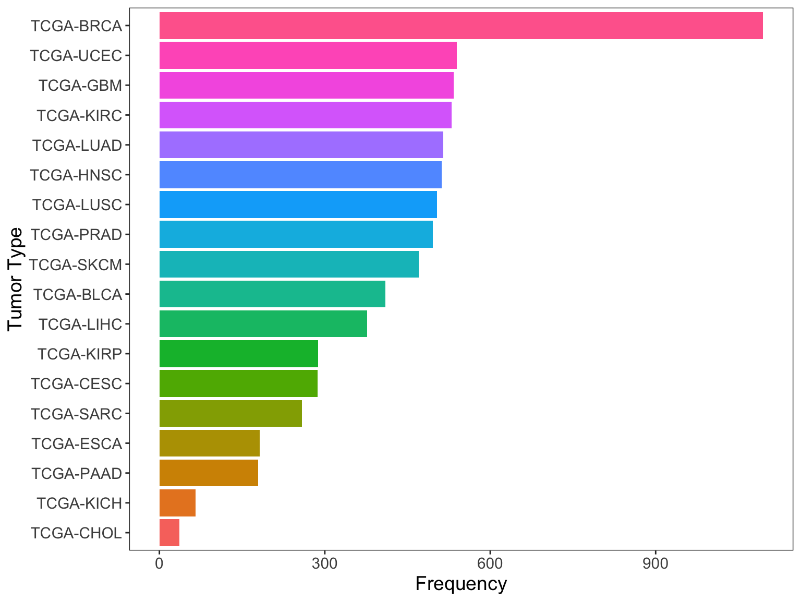
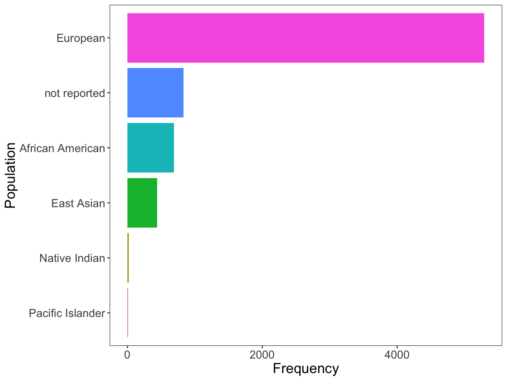
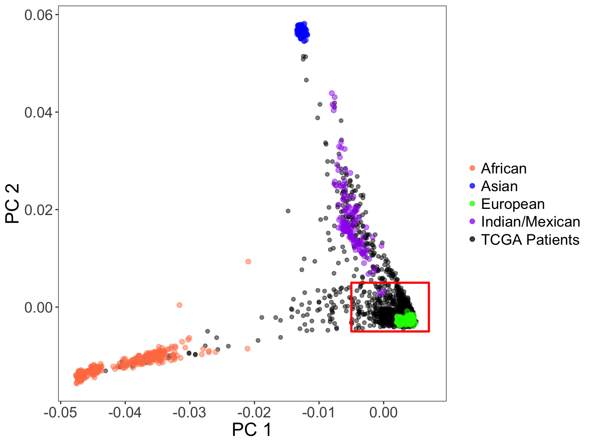

In this notebook, we analyze genotype data from 7k+ TCGA individuals. Much of the processing of genotype data has been done with PLINK v1.9.
Affymetrix SNP6 genotype calls for 7000 individuals across 22 tumor types were extracted from GDC legacy archive.
Frequency of each tumor type is plotted below. BRCA (breast cancer) is the most frequent, followed by kidney-renal cancer.
metadata <- read.delim('../data/TCGA_ALL_metadata.txt',
sep='\t',
header=F,
stringsAsFactors = F)
tumor.type.freq <- data.frame(table(metadata[,4]))
colnames(tumor.type.freq) <- c('TumorType','Frequency')
tumor.type.freq$TumorType <- factor(tumor.type.freq$TumorType,
levels = tumor.type.freq[order(tumor.type.freq['Frequency']),'TumorType'])
ggplot(tumor.type.freq, aes(x=TumorType, y=Frequency, fill=TumorType)) +
geom_bar(stat = 'identity') +
xlab('Tumor Type') + ylab('Frequency') +
theme(legend.position = 'none',
panel.grid.major = element_blank(),
panel.grid.minor = element_blank(),
text = element_text(size=14)) +
coord_flip()
Demographics of TCGA patients
demos <- metadata[,7]
demos[demos == 'american indian or alaska native'] <- 'Native Indian'
demos[demos == 'native hawaiian or other pacific islander'] <- 'Pacific Islander'
demos[demos == 'black or african american'] <- 'African American'
demos[demos == 'white'] <- 'European'
demos[demos == 'asian'] <- 'East Asian'
demos[is.na(demos)] <- 'not reported'
metadata[,7] <- demos
demo.freq <- data.frame(table(demos))
colnames(demo.freq) <- c('Population','Frequency')
demo.freq$Population <- factor(demo.freq$Population,
levels = demo.freq[order(demo.freq['Frequency']),'Population'])
ggplot(demo.freq, aes(x=Population, y=Frequency, fill=Population)) +
geom_bar(stat = 'identity') +
xlab('Population') + ylab('Frequency') +
theme(legend.position = 'none',
panel.grid.major = element_blank(),
panel.grid.minor = element_blank(),
text = element_text(size=16)) +
coord_flip() 
Data is loaded into PLINK via the following command. PED/MAP files are loaded into PLINK and the individuals sex information is also added. The command --set-hh-missing sets any heterozygous haploid SNPs to be set to missing as they are likely genotyping errors (i.e. male X chromosome SNPs). I also flipped any SNPs on the negative strand.
plink --ped TCGA_ALL.ped
--map snp6_metadata/snp6_mapfile.map
--update-sex ../sex_info.txt
--set-hh-missing
--missing-genotype N
--flip snp6_metadata/NegStrandSNPs.txt
--make-bed--out TCGA_allNext, we filter non-European samples, MAF < 5%, SNP call rate < 95%, and individual genotyping rate < 95%. We also perform a sex check between inferred sex and reported sex.
plink --bfile TCGA_all
--maf 0.05
--geno 0.05
--mind 0.05
--check-sex
--make-bed --out TCGA_Euro_s1Next, I remove individuals with inconsistent sex, drop XY chromosomes, and drop SNPs that fail HWE test.
plink --bfile TCGA_Euro_s1
--remove sex_problem_samples.txt
--exclude snp6_metadata/XY_SnpIDs.txt
--hwe 1e-5
--make-bed --out TCGA_Euro_QCHapMap3 genotype data in PLINK format were downloaded and merged with the TCGA genotype data.
PCA was performed on ~98057 LD-pruned SNPs obtained with the --indep-pairwise 50 2 0.05 flag in PLINK.
Individuals that cluster closely with European populations (CEU, YSI) were kept as indicated by the red box.
pcs <- read.delim('../data/hapmap_merged_pca.txt',sep='', stringsAsFactors = F, header=F)
meta <- read.delim('../data/relationships_w_pops_121708.txt',header=T, stringsAsFactors = F)
pcs$pop <- meta[match(pcs$V2, meta$IID),'population']
pcs[grepl('TCGA-', pcs$V2),'pop'] <- 'TCGA Patients'
tcga_df <- pcs[pcs$pop=='TCGA Patients',c('V3', 'V4', 'pop')]
hapmap_df <- pcs[pcs$pop!='TCGA Patients',c('V3', 'V4', 'pop')]
hapmap_df['Population'] <- hapmap_df$pop
hapmap_df[hapmap_df$pop=='CEU' | hapmap_df$pop=='TSI','Population'] <- 'European'
hapmap_df[hapmap_df$pop=='ASW' | hapmap_df$pop=='YRI' | hapmap_df$pop=='LWK' | hapmap_df$pop=='MKK','Population'] <- 'African'
hapmap_df[hapmap_df$pop=='GIH' | hapmap_df$pop=='MEX','Population'] <- 'Indian/Mexican'
hapmap_df[hapmap_df$pop=='CHB' | hapmap_df$pop=='CHD' | hapmap_df$pop=='JPT','Population'] <- 'Asian'
ggplot() +
geom_point(data=tcga_df, aes(x=V3, y=V4, color=pop), alpha=0.5) +
geom_point(data=hapmap_df, aes(x=V3, y=V4, color=Population), alpha=0.5, size=2) +
xlab('PC 1') + ylab('PC 2') +
annotate("rect", xmin=-0.005, xmax=0.007, ymin=-0.005, ymax=0.005, alpha=0, color='red',size=1) +
theme(text=element_text(size = 18), panel.grid.major = element_blank(), panel.grid.minor = element_blank(),
legend.title = element_blank()) +
scale_color_manual(values=c('coral','blue','green','purple','black'))